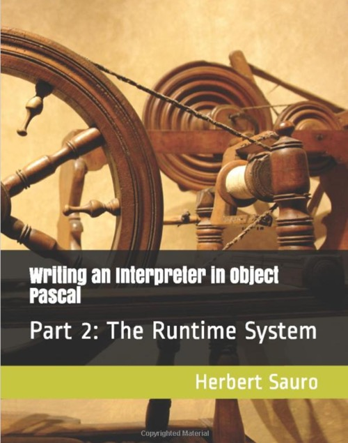

Writing an Interpreter in Object Pascal: Part 1: The Runtime System
Writed by : Herbert Sauro
Published date : 12/03/2020
ISBN-10 : 1732548625
ISBN-13 : 9781732548626
Language :  English
English
Web site : https://www.objectpascalinterpreter.com/part-ii
About Writing an Interpreter in Object Pascal: Part 1: The Runtime System
This is part 2 of a series that will show you how to write an interactive interpreter in Object Pascal. Part 2 describes the building of the first version of a virtual machine together with a simple assembler. The book combines the virtual machine with the syntax checker for the Rhodus language. Intermediate code is generated directly as the source code is parsed. At the end of Part II, the reader will be a very serviceable interpreter that supports user-defined functions, built-in functions, string, and list support together with a range of looping constructs. A simple console application is provided to allow users to exercise the interpreter. The book provides fully working open-source code (also deposited at Github) and explains in plain English how the code works and why certain decisions were made. The book makes liberal use of code throughout the book chapters. Everything is done without the help of third-party tools. All you need is a standard installation of Free Pascal or Embarcaderos's excellent Delphi (including the free community edition). The text is geared to hobbyists and midlevel developers who need an easy introduction to building a simple virtual machine and code generator. The book is also for students starting out in compiler and interpreter design and need something more digestible before getting immersed in compiler theory.
Where to buy ?
This book has the ISBN13 "9781732548626".
If it is still available for sale, you can order it in your favorite bookstore, by its publisher or online at
Amazon CA,
Amazon FR,
Amazon JP,
Amazon UK or
Amazon USA depending on your country.